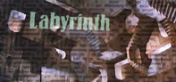
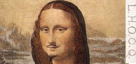
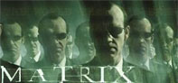

reading [Memex]:
Vanevar Bush, As We May Think, The Atlantic Monthly, July 1945.
All the way back , Vanevar Bush imagined an information
appliance that is still in many respects more powerful than anything
we have today.
readings [Ted Nelson]:
Computer Lib/Dream Machines, 1970-1974,
from the excerpt in
The New Media Reader, 303-317, 319-322, 335-338.
Literary Machines, 14-17.
A file structure for the complex, the changing and the indeterminate,
Proc ACM 20th National Conference, 84-100, 1965.
Computer Lib/Dream Machines, 1970-1974,
from the excerpt in The New Media Reader, 303-317, 319-322, 335-338.
from the excerpt in The New Media Reader, 303-317, 319-322, 335-338.
Literary Machines, 14-17.
A file structure for the complex, the changing and the indeterminate,
Proc ACM 20th National Conference, 84-100, 1965.
Early in the 1960's, Ted Nelson coined the term hypertext, to
mean forms of non-linear writing. Hypertext is characterized as a
directed graph structure of nodes and links. From the start of its
conception, writers and computer scientists have been involved.

reading [Labyrinth]:
Jorge Luis Borges, The Garden of Forking Paths, in
Ficciones, -or-
Labyrinths; selected stories & other writings,
1941.
How can this short story from a prior era
serve as a metaphor for hypertext structure?!
Ficciones, -or-
Labyrinths; selected stories & other writings,
1941.

reading [Found Objects]:
Lucy Lippard, Dadas On Art, Englwd Cliffs NJ: Prentice Hall, 1972.
excerpt 139-143: Marcel Duchamp
excerpt 139-143: Marcel Duchamp
Marcel Duchamp's Fountain was perhaps the most important
art work of the 20th century. How did this anti-masterpiece
demonstrate the power of context, when an object is referenced?

reading [Hyperreal]:
Jean Baudrillard, The Ecstasy of Communication,
in Hal Foster,
The Anti-Aesthetic: Essays on Postmodern Culture.
New York: New Press, 1983.
on
electronic reserve.
on electronic reserve.
Baudrillard coined the term hyperreal to describe
a socio-cultural phenomenon, in which electronic media realities
become more significant than physical realities. Recently,
The Matrix
films have brought this
conceptual perspective
into the spotlight of
popular media.